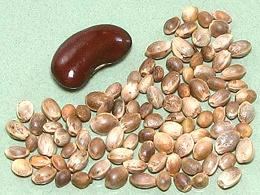
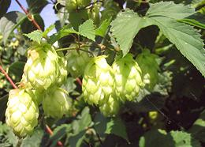

SAFARI
Users
Hemp Seed / Hemp Seed Oil
 [Cannabis sativa]
Hemp seed has been a provider of nutrition and cooking oils since before the dawn of history. Unlike grains, hemp seed has an almost perfect protein balance from human nutrition, 20 amino acids including all 9 essential amino acids, and in an easily digestible form. Hemp is also gluten free.
Hemp seed is quite available in the United States and can be purchased off the shelf at Armenian markets, ordered on-line, or from health food stores (higher price). Commercial hemp seed has only trace amounts of THC and CBD, but hemp seed, often imported for Canada, must be non-viable to be legal. The Feds fear people will grow industrial hemp and hide recreational hemp within the plantings.
Hemp Seed Oil has what many consider a perfect 3:1 balance
between Omega-6 and Omega-3 fatty acids. It is, however 80%
polyunsaturated oils, so it is more vulnerable than almost any other oil
to oxidation rancidity from storage or heat - not recommended for
cooking, especially frying. Some products of rancidity are suspected
carcinogens - but it is this very oxidation (drying) that makes
high polyunsaturated oils like hemp, flaxseed and poppyseed suitable for
oil based paints. Hemp seed oil must not be confused with "hash oil",
which is actually a concentration of resins containing psychoactive
ingredients.
Hops
 [Hovenia dulcis]
The part of the hop vine (actually a "bine" because it climbs by wrapping
around things) is the female flower, which looks sort of like a paper
pine cone. Almost all hops are used in the beverage industry, mainly for
flavoring beer, but also for kvass, some herbal teas and a couple of
soft drinks. For beer, two types of cultivar are used; flavor hops which
are boiled with the malt wort, and aroma hops which are added at the
end or after the boiling. In times past, many other bitter herbs were
used to flavor beer, but hops were found to be antibacterial, thus
providing for a more reliable fermentation.
Photo by Dr. Hagen Graebner distributed under license
Creative Commons
Attribution-ShareAlike 2.5 Generic.
Hemp
[Cannabis sativa & Cannabis indica]
There are many cultivars of Cannabis sativa, but they fall into two general categories: Industrial, with negligible amounts of THC and CBD, and Recreational / Medicinal, with high amounts of the psychoactive THC and CBD. The United States is the only significant country that bans growing industrial hemp, out of fear recreational hemp could be hidden among the industrial crop. The U.S. Congress came down very hard on hemp when they made marijuana illegal - out of fear that white girls would go out to music halls, get high on grass and have sex with black musicians - I kid you not. Anyone who thinks our current Congress critters are stupider than those of "America's Glory Days", knows little Congressional history.
Industrial hemp is used primarily for fiber, very useful for many industrial and agricultural products, and for seeds and oil. Currently, Canada fills the need for those products. Photo by Bogdan distributed under license Creative Commons Attribution-ShareAlike 3.0 Unported.
Medicinal hemp comes in two varieties, Cannabis sativa, the preferred species for recreational use, and Cannabis indica. Indica is considered more sedative and is preferred for nighttime use. Sativa is considered more stimulating and preferred for daytime use.
Recreational hemp comes in several forms. Most common is dried flowerhead material, "buds", which is smoked by various means. Hashish, or "hash" is a concentration of just the glandular hairs from the flowerhead, usually pressed into blocks of some or another shape. The resin in these hairs contains the psychoactive components. This is the form with the greatest culinary association, as it has been used to make "hash brownies" and other edible but psychoactive concoctions. "Hash oil" is a further refined and concentrated product, usually produced by solvent extraction of the resins. The highest grade comes from the flowerheads, but it is also recovered from leaves and stems.
Both medicinal and recreational hemp products are highly illegal in
the United States, by federal law - however, several states have
legislated much looser laws, most for medicinal marijuana, but a few
states have legalized recreational marijuana as well, and some
agricultural states have passed legislation aimed at permitting farming
industrial hemp. There has yet to be a major legal showdown between
state and federal laws.